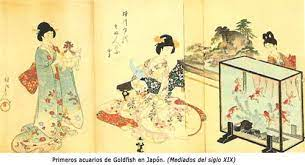
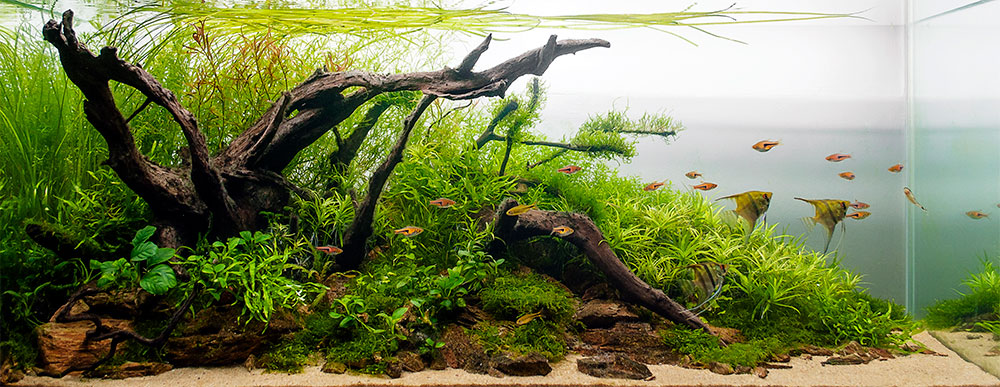

"Quien tiene peces como mascota no es un acuariófilo. Quien se preocupa por la biología y la ecología de los peces y crea un ecosistema donde solo son una parte de los organismos que viven en el acuario, sí lo es"
La acuariofilia moderna es la afición a la cría de peces y otros organismos acuáticos en acuario bajo condiciones controladas. Ha evolucionado tremendamente a lo largo de los siglos, desde el mantenimiento de carpas doradas con fines ornamentales en recipientes y estanques, desde hace 2000 años.
El origen de la acuariofilia es muy antiguo, y va ligado al de la acuicultura. Los antecedentes de cultivo de peces,fundamentalmente carpas, se remontan a los sumerios, que ya utilizaban estanques para mantener peces vivos destinados a alimentación. Los romanos también criaban carpas destinadas al consumo. En China, los bancales inundados para el cultivo de arroz eran utilizados para la cría de carpas, como fuente complementaria de proteína. De estos cultivos aparecieron formas coloreadas de carpines dorados y carpas koi que fueron seleccionadas por su belleza. Posteriormente fueron llevadas a Japón, donde se desarrollaron nuevas variedades. Durante la Dinastía Song, gobernantes de China en el periodo que va de 960 a 1279, fue cuando se popularizó más el mantenimiento de peces dorados en recipientes de cerámica. Sobre el año 1750 se introdujo en Europa los primeros peces de colores, pero hasta el siglo XX no se empezó a intentar la cría de especies tropicales, debido a la dificultad para obtener ejemplares vivos (tenía que hacer largos viajes), y la dificultad de mantenimiento (aparte de condiciones ambientales y alimentación, no existían sistema de calefacción adecuados). Sobre los años 1930 el acuario se empezó a convertir en un objeto de decoración en algunos hogares y lugares públicos.
El paisajismo acuático es la práctica de crear un paisaje acuático natural en su acuario. Se asocia comúnmente con acuarios de agua dulce plantados vivos, sin embargo, los acuarios de arrecife de agua salada también utilizan esta práctica. Los acuarios de arrecife utilizan rocas para crear estructuras en las que se adhieren o colocan corales vivos. La ubicación de muchos corales es crucial para la mayoría de las especies. Esto se debe a que los diferentes tipos de coral tienen diferentes requisitos en términos de flujo, intensidad de luz o proximidad a otros corales. Los corales que requieren una luz más alta a menudo se colocan en posiciones elevadas, y las especies de coral que requieren una iluminación más baja a menudo se colocan más abajo en el acuario, más cerca del fondo. De manera similar, ciertos corales requieren cantidades específicas de flujo de agua o corriente. Los corales que requieren más flujo se colocan más cerca de las salidas de las bombas, los cabezales de potencia o los generadores de olas. Por el contrario, los corales que requieren menos flujo se colocan más lejos de las fuentes de corriente y pueden estar protegidos por rocas. En agua dulce, las plantas acuáticas vivas son a menudo el foco de estos acuarios, pero los elementos naturales, como rocas o madera flotante, se utilizan para crear un paisaje duro. Existen muchos estilos distintos de paisajes acuáticos de agua dulce, como el paisaje acuático de estilo holandés muy plantado o las exhibiciones de la naturaleza de inspiración japonesa. Algunos paisajes acuáticos de agua dulce no tienen plantas y solo utilizan madera flotante decorativa, piedras u otros materiales duros para paisajismo. Varios paisajes acuáticos no solo brindan obras de arte vivientes a su hogar, sino que también brindan un hábitat más realista para sus peces que puede reducir el estrés. En los acuarios de arrecife, existen numerosas especies de peces que requieren un entorno de tanque de arrecife para prosperar adecuadamente. Muchas especies de peces y otras especies de acuarios prefieren lugares para esconderse o excavar. El paisaje acuático de un arrecife o un acuario plantado se vuelve fundamental para proporcionar a ciertas especies de habitantes del acuario requisitos de vivienda específicos. La recreación de un hábitat natural en el acuario de su hogar puede ser una adición educativa y sorprendente para su hogar.
 Estilo Holandes
Estilo Iwagumi
Estilo Jungla Estilo
Natural Biotopo